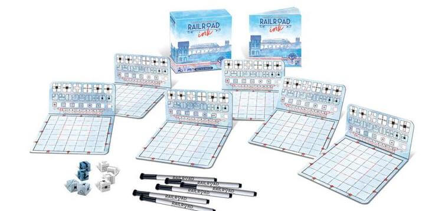
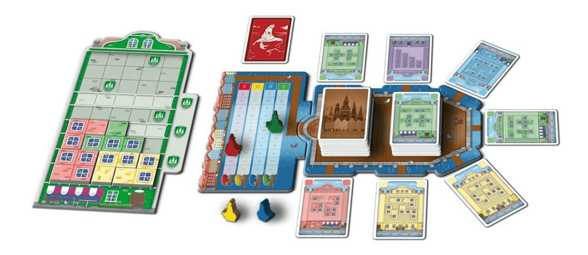
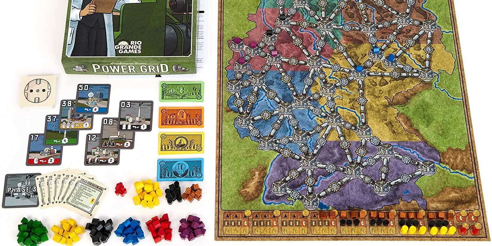

If you like Ticket to Ride, try these 3 games


Ticket to Ride has become a classic of modern board gaming thanks to its elegant design and quick-to-learn rules. As a fan of this game, you might enjoy the thrill of connecting a long path of trains, the satisfaction of blocking your opponents, or optimizing the best route to earn points.
If you're looking to expand this gaming experience further, try out the Ticket to Ride 1910 expansion, which adds more routes to the base game to increase the challenge and replayability. Otherwise, you can expand your horizons a bit more with these 3 games that introduce new game mechanics to the card drawing and route-connecting fun of Ticket to Ride.
Railroad Ink

In Railroad Ink, you connect train tracks and roads by literally drawing them on paper. This game is a "Roll & Write", which means that you roll some dice to determine what you and your opponents can draw each turn. Each time you play the game, you'll have a different experience based on the dice rolls, but all players work with the same inputs.
Railroad Ink feels similar to Ticket to Ride in that you're rushing to connect routes with a limited number of turns, and there's a decent amount of luck involved. The nice twist here is that everyone plays from the same options, so you don't have situations where one person gets blocked way worse than anyone else. While the game is technically limited to 6 players, you can buy multiple copies and play it with any number of people at once.
If you've ever felt the immeasurable rage of being blocked when you're 1 turn away from completing your long route in Ticket to Ride, Railroad Ink may be a friendlier option for you. This game really packs a punch in terms of strategy despite it's simple ruleset. We love this game because anyone can learn it in 5 minutes and it can bring a large group of players together.
Buy Railroad Ink on Amazon
Copenhagen
If you enjoy the mechanism of collecting colored cards to execute your plans, you should give Copenhagen a try. You'll gather cards like in Ticket to Ride in this game, but Copenhagen has some interesting twists beyond that.
In this game, you take 2 cards each turn (like Ticket to Ride), but you have to take cards that are next to each other in display. Additionally, you can only hold 7 cards in your hand at a time, so nobody can hoard half the deck in their hand. All of this makes getting the cards you want a little bit trickier, but also more rewarding when it works out.
When you decide to spend the cards from your hand, you won't be making train routes; instead, you'll use them to add colorful tetris-like facade pieces to the front of your house. You have to play the pieces according to some placement rules and you might earn special bonus tiles or abilities when you place them. If you've gotten sucked into a game or 10 of Tetris, you'll enjoy the similar (but slower-paced) spatial thinking component here.
This game benefits from the same quick turns as Ticket to Ride while shining a light on abstract strategy for a fun new puzzle. Your final house will fit right in with charming photos of the actual colorful houses along the water in Copenhagen!
Buy Copenhagen on Amazon
Power Grid
In Power Grid, the game ends when you build a large network of connected cities and supply power to all of them. Expanding your power grid will feel similar to route building in Ticket to Ride, but the rest of the game takes a different direction.
Each turn in this game is played through a series of phases in which you will gain equipment & fuel (like coal or uranium) to powering the cities in your expanding Power Grid. To purchase equipment, you will have to bid against all the other players (just like an auction on TV). If you save any money after that, you can buy fuel and store some for the future. To win this game, you will need to manage your fuel resources by thinking several turns ahead when buying and using fuel. Finally, you will power your grid to gain more money for the next turn.
Strategically, Power Grid is much deeper than Ticket to Ride because you have to manage more moving parts with every decision. This game is a great way to begin exploring the world of heavier "euro" games that work your brain a bit harder. Overall, Power Grid is one giant balancing act of efficient spending, so if you're looking to stretch your optimization skills, this game might be up your alley.
Buy Power Grid on Amazon